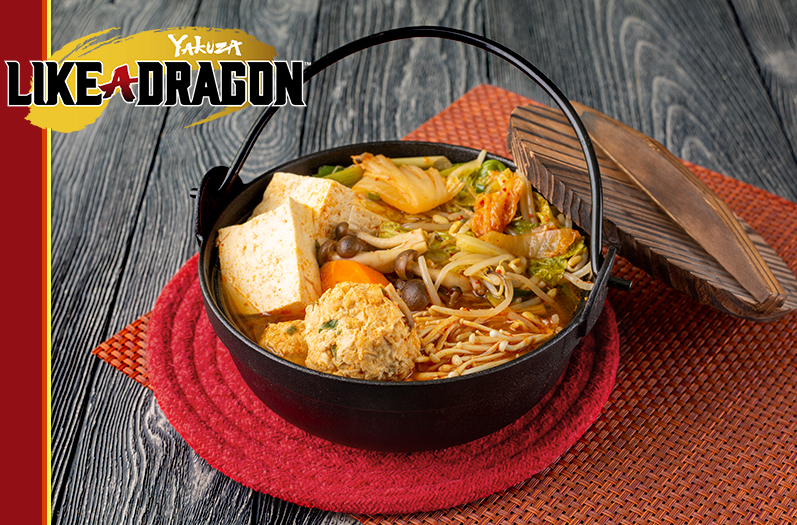

YAKUZA LIKE A DRAGON: HELL STEW

A fan made dish inspired by "The Devil's Hellish Hot Pot" a karaoke song appearing in the much loved videogame "Yakuza: Like a Dragon". It is sung by Ichiban Kasuga and Tianyou Zhao.
Ingredients
Broth
- 4 cups chicken broth
- 3 cups water
- 1 kombu
- 3 scallions cut into large pieces
- 1 whole garlic cut in half
- 2 inch piece of ginger sliced
- 3 dried shiitake mushrooms
- ½ tbsp sichuan peppercorns
- 1 tbsp black peppercorns
Pork Meatballs
- 1 ½ lbs ground pork
- 1 egg
- 1 egg yolk
- 2 tsp ginger grated
- 2 tsp garlic powder
- 1 tbsp soy sauce
- ⅔ cup panko
- 2 scallions chopped
- ½ tsp ground pepper
Hell Stew
- 1 cup kimchi cabbage roughly chopped
- 1 king oyster mushroom sliced
- 1 ½ tbsp gochujang
- 2 tsp gochugaru
- 2 tsp sugar
- 2 tbsp 30 ml sake
- ¼ cup kimchi juice
- 2 tbsp aka miso
- 1 carrot peeled and cut into bite-sized pieces
- 5 napa cabbage leaves sliced thick
- 8 oz 226 g extra firm tofu, cut into large portions
- 1 bunch of enoki mushrooms
- 1 bunch of shimeji mushrooms
- 3 scallions cut into 3-inch pieces
Intructions
Broth
- Combine the chicken broth, water, kombu, scallions, garlic, ginger, shiitake mushrooms, sichuan peppercorns, and black peppercorns in a large pot over medium-high heat.
Bring to just before a boil. Reduce the heat and simmer for an hour.
Strain and set aside.
Pork Meatballs
- Combine all the ingredients until it just comes together. Split and shape into equal sized meatballs. Set aside.
Hell Stew
- Heat a large pot over medium-high heat. Add a tablespoon of canola oil. Add the kimchi and king oyster mushrooms. Cook until the mushrooms have softened, about 5 minutes.
- Add the gochujang, gochugaru, sugar, sake, and kimchi juice. Mix until well combined. Add the broth and aka miso, stir until everything is mixed together.
- Place the cabbage, tofu, pork meatballs, enoki mushrooms, shimeji mushrooms, and scallions into the pot.
- Allow the broth to come to a slight boil. Reduce the heat and simmer until the meatballs are cooked through, about 10 minutes. Serve with udon.